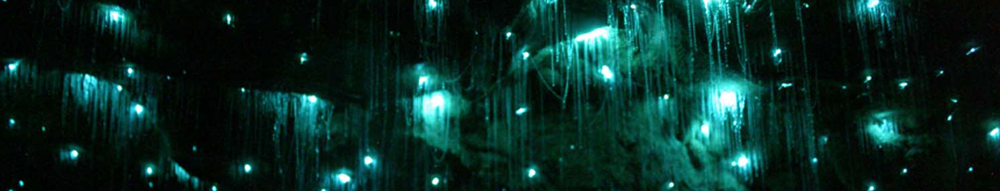

	<div class="unit unit-m-1-2">
			
		<h2>Aquatic Animals</h2>
		<ul>
			<li class="button-li"><a href="{{site.baseurl}}/coral.html" class="button">Coral</a></li>
			<li class="button-li"><a href="{{site.baseurl}}/vampire-squid.html" class="button">Vampire Squid</a></li>
			<li class="button-li"><a href="{{site.baseurl}}/bobtail-squid.html" class="button">Bobtail Squid</a></li>
			<li class="button-li"><a href="{{site.baseurl}}/firefly-squid.html" class="button">Firefly Squid</a></li>
			<li class="button-li"><a href="{{site.baseurl}}/jelly-fish.html" class="button">Jelly Fish</a></li>
		</ul>	
	</div>
